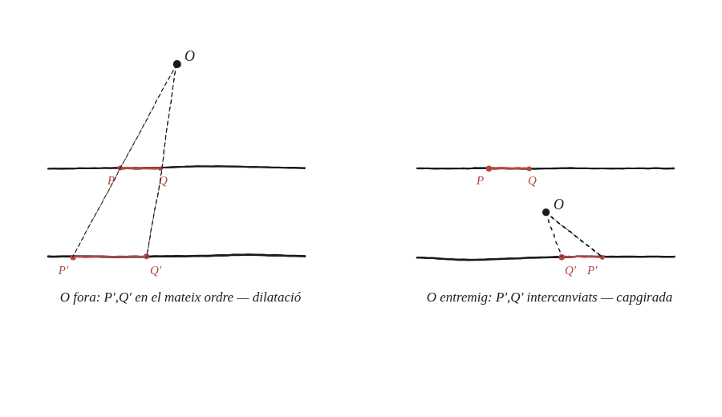

Quin és l'efecte de la projecció central quan els plans són paral·lels? Què passa si el punt de projecció es troba entre els plans?
Què hem de produir
Dues respostes, una per cada subcas de l'enunciat —no una de sola. Primer: què li passa a una figura quan es projecta centralment entre dos plans paral·lels amb el punt de projecció fora d'entremig. Segon: què canvia si el punt de projecció queda entre els dos plans.
Segueix un sol punt amb un paràmetre
Es posa el punt de projecció a alçada p, un pla a alçada 0 i l'altre a alçada h. Un punt a distància x₀ de l'eix, al pla 0, es projecta a distància x₀·(p−h)/p al pla h —surt de resoldre on la recta des del punt de projecció talla el segon pla. Provant-ho amb p més gran que h (fora d'entremig) i després amb p entre 0 i h.
La construcció
Els dos subcasos, un al costat de l'altre: amb O fora dels dos plans, i amb O entremig.

Tancar-ho
Quan p és fora de l'interval [0,h], el factor (p−h)/p és positiu: la figura es projecta ampliada o reduïda però sense capgirar-se. I val la pena aturar-s'hi, perquè aquesta és la primera homotècia de debò del bloc: a la Qüestió 91 el factor depenia de la direcció del segment, i a la 92 depenia d'on era el segment; aquí no depèn de res, és el mateix número per a tota la figura i per a totes les direccions. El que ho arregla no són les línies de projecció, que continuen sortint totes d'un sol punt, sinó que ara els dos plans són paral·lels. Quan p és entre 0 i h, aquest mateix factor esdevé negatiu: la figura es projecta capgirada, com la imatge d'una cambra fosca, no només escalada.
Entre dos plans paral·lels, amb el punt de projecció fora d'ells, la projecció central és una homotècia de debò —el mateix factor (p−h)/p per a tota la figura i per a totes les direccions—, sense capgirar. Amb el punt de projecció entre els dos plans, aquell mateix factor es torna negatiu i la imatge surt capgirada. El que fa que aquí sí que hi hagi un factor únic, cosa que no passava a les Qüestions 91 i 92, és que els dos plans siguin paral·lels entre si.
Comprovació
h=10. Amb p=−2 (fora, per sota): factor=(−2−10)/(−2)=6, positiu. Amb p=20 (fora, per sobre): factor=(20−10)/20=0,5, també positiu —la figura surt a la meitat i dreta. Amb p=5 (entremig): factor=(5−10)/5=−1, negatiu: la figura surt exactament invertida i de la mateixa mida. Acostant el punt de projecció al primer pla, p=0,001, el factor es dispara a −9999; i a p=0 exacte ja no hi ha projecció possible, perquè el punt de projecció cauria damunt de la figura mateixa.
Aquest capgirament és el mateix fenomen que fa que la imatge dins d'una cambra fosca (o la retina de l'ull) surti invertida: el punt de projecció (el forat) queda entre l'objecte i la pantalla on es forma la imatge.